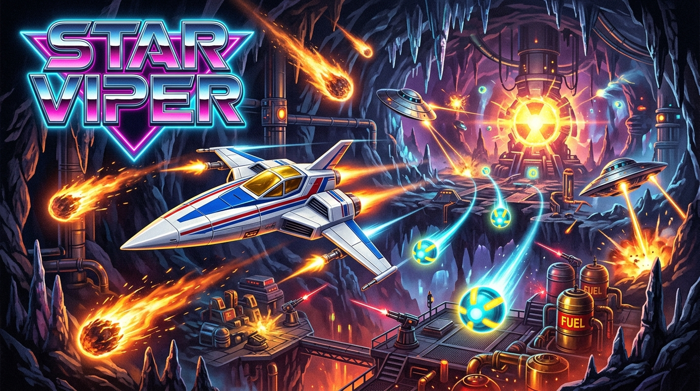
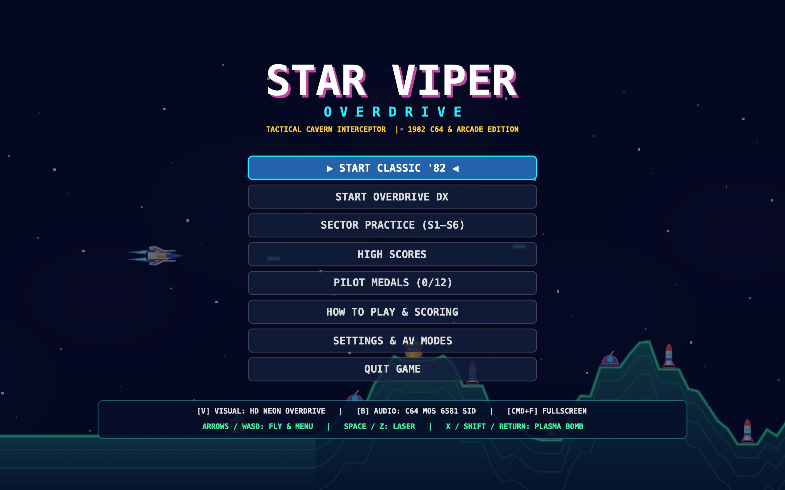
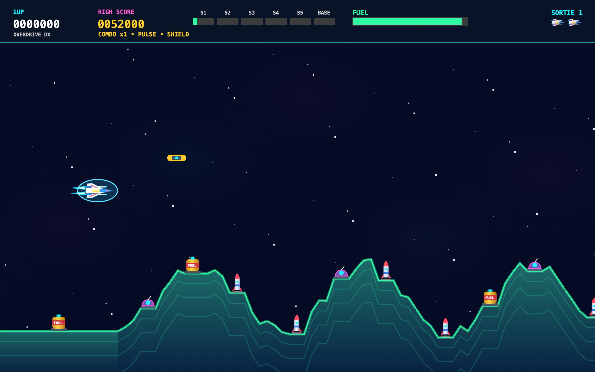
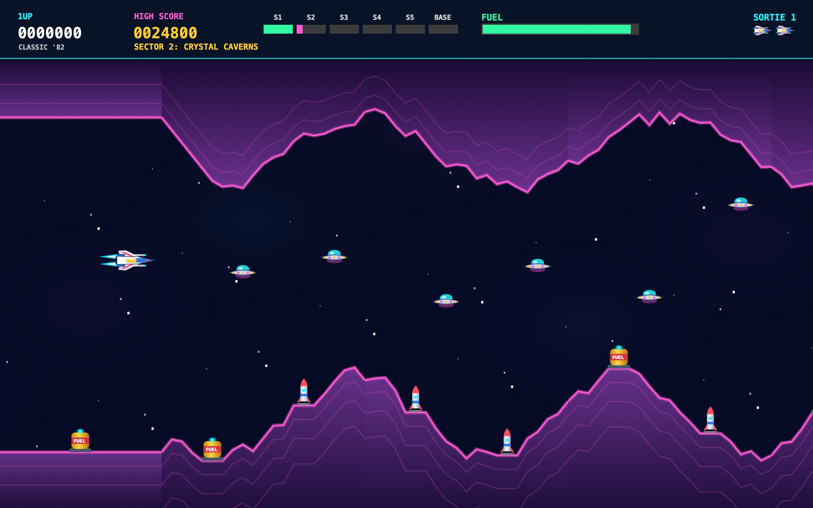
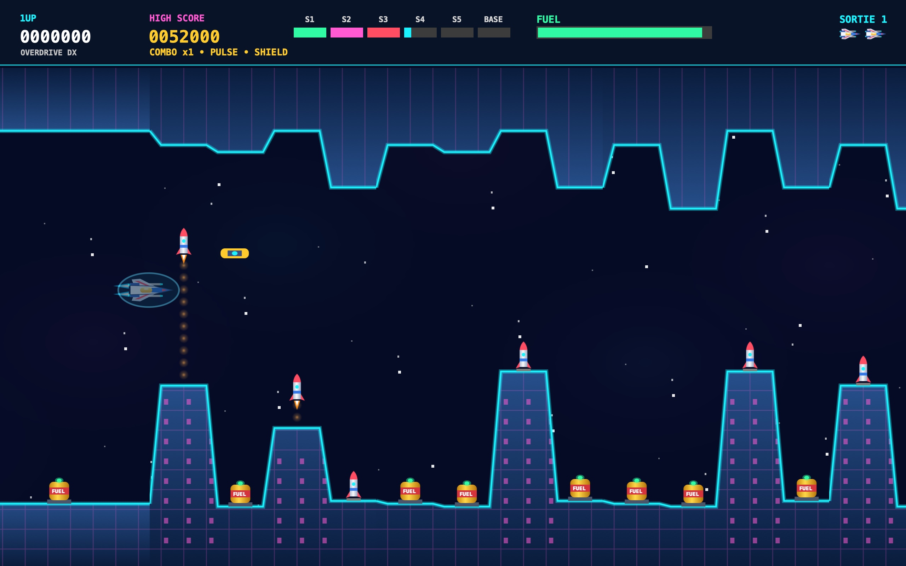
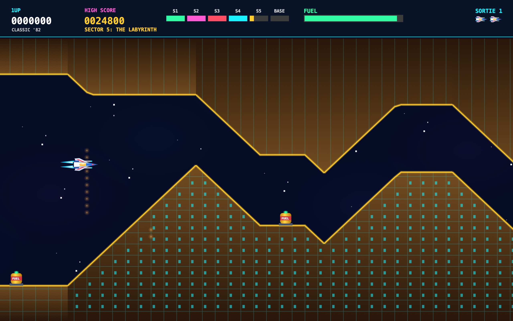
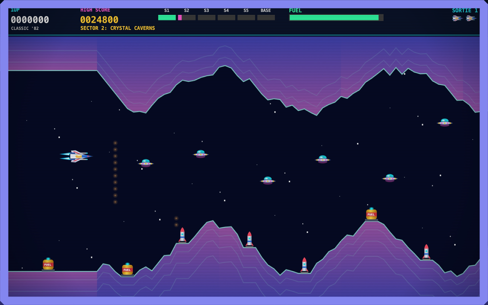

Six Seamless Subterranean Sectors Hat Összefüggő Földalatti Szektor
S1 • Mountain RidgeS1 • Hegylánc
Skim jagged alpine peaks, snipe surface-to-air interceptor rockets before ignition, and crack mystery radar bunkers.
Csipkézett hegygerincek, padlóról induló elfogó rakéták és rejtélyes pontszámú radarbunkerek.
S2 • Crystal CavernsS2 • Kristálybarlangok
Enter enclosed stalactite ceilings while alien saucer squadrons weave across your flight path in deadly sine waves.
Zárt cseppkő-plafon és szinusz-hullámban szemberepülő UFO-kötelékek szűk barlangjáratokban.
S3 • Meteor StormS3 • Meteorvihar
Indestructible blazing fireballs streak horizontally at high velocity — dodge the storm while bombing ground FUEL tanks.
Elpusztíthatatlan izzó tűzgömbök száguldanak szembe — szlalomozz közöttük, miközben a FUEL tartályokat bombázod.
S4 • High-Rise CitadelS4 • Felhőkarcoló Citadella
Vertical steel towers hide FUEL silos deep inside narrow shafts. Release parabolic bombs a split-second before the ledge.
Páncélozott tornyok és mély függőleges aknákba rejtett silók, amelyeket precíz parabolikus bombaejtéssel érhetsz el.
S5 • The LabyrinthS5 • A Labirintus
Zero enemy fire — pure white-knuckle 45-degree armored corridors where fuel starvation is your fiercest adversary.
Szűk, 45 fokos páncélfolyosók könyörtelen üzemanyag-nyomás alatt, ahol egyetlen hiba is végzetes.
S6 • Reactor FortressS6 • Reaktor Erőd
Breach the inner sanctum and obliterate the Central Command Reactor Core to trigger a chain explosion and loop into faster Sorties!
Hatolj be a belső erődbe, és semmisítsd meg a Központi Reaktormagot a láncreakciós robbanáshoz és a gyorsuló Sortie körökhöz!
In-Game Screenshots (macOS Native) Játékbeli Képernyőképek (Natív macOS)






Live 1982 Time-MachineÉlő 1982-es Időgép
- Press V mid-flight to switch instantly between HD Neon Overdrive, CRT Phosphor Scanlines, and 1982 8-Bit Retro framing.
- Press B mid-flight to toggle real-time procedural synthesis between Modern Synthwave and classic 3-channel pulse/arpeggio & falling-bomb whistle audio.
- Nyomd meg repülés közben a V gombot a HD Neon, a CRT foszfor és az 1982-es 8-bites keretes látvány közti azonnali váltáshoz.
- Nyomd meg a B gombot a Modern Synthwave és a klasszikus 3-csatornás pulzus/arpeggio + fütyülő bomba hangzás közötti élő váltáshoz.
Pure Premium Arcade — Zero BloatTiszta Prémium Árkád — Reklámok Nélkül
- Universal Purchase across iPhone, iPad (iOS/iPadOS 16+) & Mac (macOS 14+ Universal 2)
- Precision Multi-Touch Flight Deck + Haptics, PS5/Xbox/MFi Gamepads & Keyboard
- 100% Offline, Zero Ads, Zero Microtransactions, Zero Data Collection
- Univerzális Vásárlás iPhone, iPad (iOS/iPadOS 16+) és Mac (macOS 14+ Universal 2) eszközökre
- Precíziós Multi-Touch pilótafülke + Haptika, PS5/Xbox/MFi kontroller és billentyűzet
- 100% Offline, nulla reklám, nulla mikrotranzakció, nulla adatgyűjtés